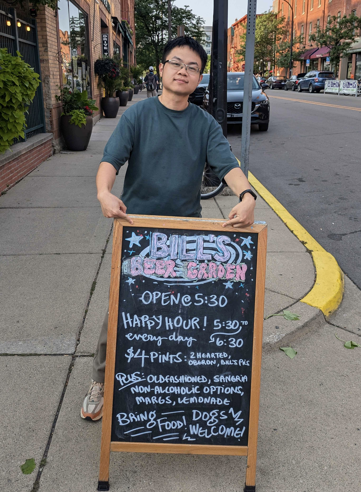

I received my Ph.D. from the University of Michigan Department of Astronomy in summer 2026, where I worked with Prof. Oleg Gnedin. Before coming to Michigan, I received my B.S. degree at Peking University School of Physics in 2020.
我在2026年夏于密歇根大学天文系获得了博士学位，师从 Oleg Gnedin 教授。我此前在2020年于北京大学物理学院获得了理学学士学位。
I'm a theorist+observer trying to uncover the mysteries of galaxy formation probed by star clusters and stellar streams. Click here to learn more about my research.
我通过理论和观测结合的方法研究星团和星流。这些古老的恒星集团记录了星系早期的信息。科研详情请点击这里。
Fall 20262026年秋 I will start a postdoc position at the Center for Cosmology and AstroParticle Physics (CCAPP) at the Ohio State University as a CCAPP Fellow! 我将以 CCAPP Fellow 的身份加入俄亥俄州立大学宇宙学和天体粒子物理学中心成为一名博士后!
Summer 20262026年夏 I received my Ph.D. from the University of Michigan Department of Astronomy! 我于密歇根大学天文系获得博士学位!

323 West Hall, 1085 S. University
Ann Arbor, MI 48109-1107, US
ybchen(at)umich.edu
© 2020 — Bill Chen